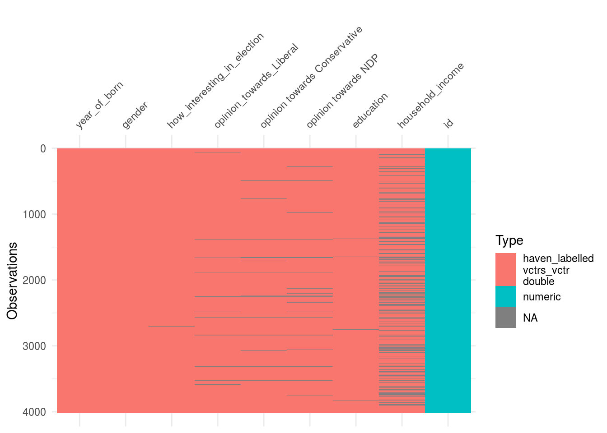
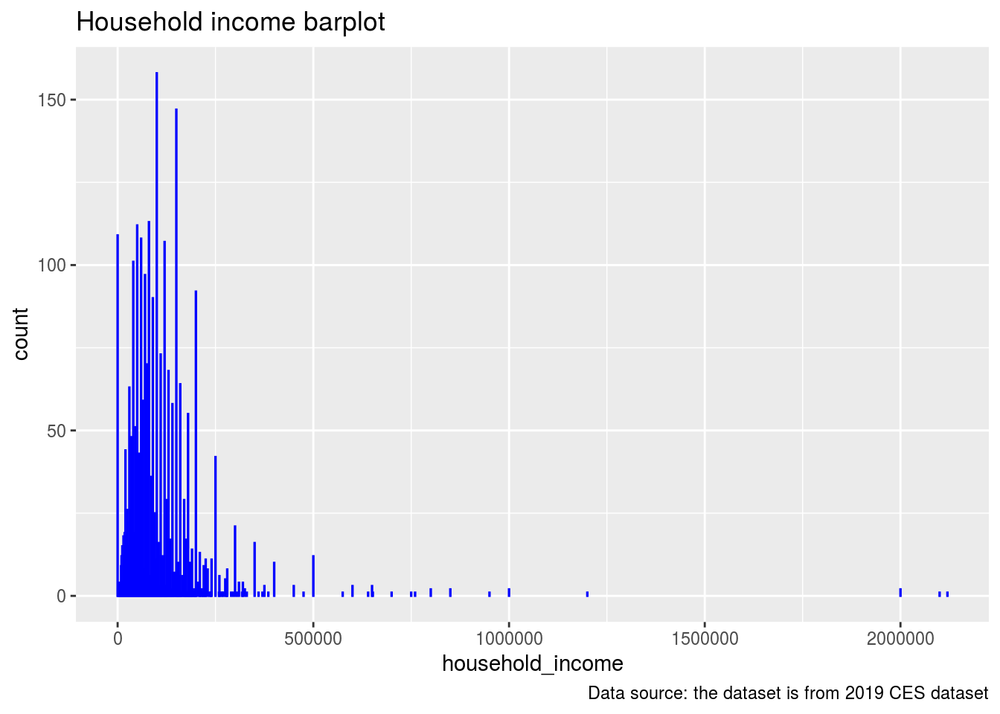
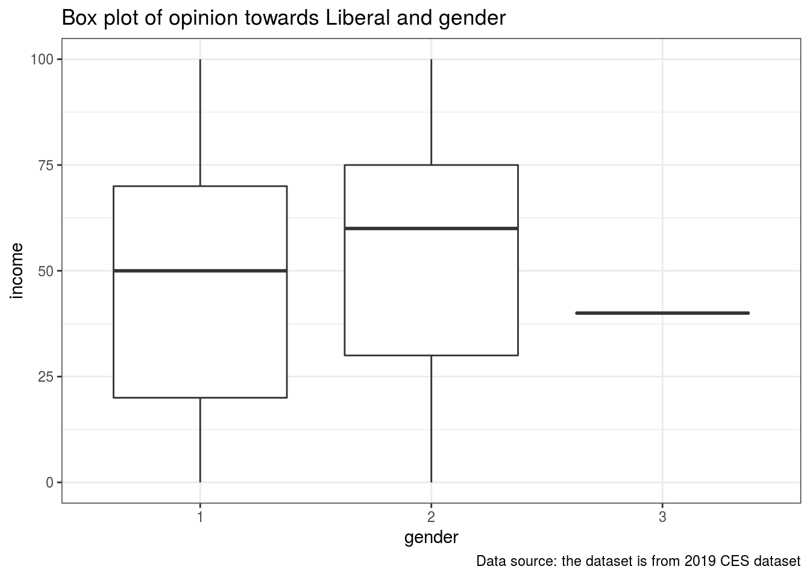

Abstract
“In this paper we analysed the 2019 CES phone survey data. By analyzing the data, the results showed that females have more positive opinion towards Liberal in Canada. These results are important because it gives a forecast people’s behavior in the election and can give a positive impact on the party’s campaign strategy.”
Introduction
In Canada, the difference political opinion among genders have been extended in the last election. It might be a dangerous signal that after the race, each gender may have their own “identity politics”. Thus, by analyzing the opinions in each genders towards Liberal we can have a glance at the situation. We find that the female hold a more positive opinion towards Liberal.
In our study, we analyzed the data from the 2019 CES phone survey, we try to find the relationship between each individuals opinion towards Liberal(a numeric score) and gender(male, female and others), we find that there exist a significant difference on their attitudes. On a scale of 0-100, the median score female respondents give is 60 which male respondents give is only 50.
We analyzed the different popularity of Liberal in each gender. However we may ignore some other facts that also influence people’s choices, for example income, since Liberal party may give higher tax rate for high-income groups. For further study we can focus on these factors which may also influence people’s attitudes and opinions in the election and not only limitted to gender.
Data
The 2019 Canadian Election Study - Phone Survey gathered the attitudes and opinions of Canadians during and after the 2019 federal election, and used to study the reasons of peoples’ choice. It widely assemble Canadians’ attitudes on the social issues, economics and political opinions. The 2019 CES phone survey dataset contains the data from the result of the phone survey of 2019 Canadian Election.
#install.packages("devtools")
library(devtools)## Loading required package: usethisdevtools::install_github("hodgettsp/cesR")## Skipping install of 'cesR' from a github remote, the SHA1 (7c780beb) has not changed since last install.
## Use `force = TRUE` to force installationlibrary(cesR)
get_ces("ces2019_phone")## TO CITE THIS SURVEY FILE:
##
## - Stephenson, Laura B; Harell, Allison; Rubenson, Daniel; Loewen, Peter John, 2020, '2019 Canadian Election Study - Phone Survey', https://doi.org/10.7910/DVN/8RHLG1, Harvard Dataverse, V1, UNF:6:eyR28qaoYlHj9qwPWZmmVQ== [fileUNF]
##
## - Stephenson, Laura, Allison Harrel, Daniel Rubenson and Peter Loewen. Forthcoming. 'Measuring Preferences and Behaviour in the 2019 Canadian Election Study,' Canadian Journal of Political Science.
##
## LINK: https://dataverse.harvard.edu/dataset.xhtml?persistentId=doi:10.7910/DVN/8RHLG1data <- ces2019_phoneWe mainly focus on some of the variables that are listed in the table below:
library(dplyr)##
## Attaching package: 'dplyr'## The following objects are masked from 'package:stats':
##
## filter, lag## The following objects are masked from 'package:base':
##
## intersect, setdiff, setequal, unionselected_data <- data %>% select(sample_id, q2, q3, q9, q14, q15, q16, q61, q69)
colnames(selected_data) <- c("id", "year_of_born", "gender", "how_interesting_in_election", "opinion_towards_Liberal", "opinion towards Conservative", "opinion towards NDP", "education", "household_income" )
data_description <- data.frame(CES_names=c("sample_id", "q2", "q3", "q9", "q14", "q15", "q16", "q61", "q69"),variable_descriptions=c("id", "year of born", "gender", "how interesting in election?", "opinion towards Liberal", "opinion towards Conservative", "opinion towards NDP", "education", "household income"))
data_description## CES_names variable_descriptions
## 1 sample_id id
## 2 q2 year of born
## 3 q3 gender
## 4 q9 how interesting in election?
## 5 q14 opinion towards Liberal
## 6 q15 opinion towards Conservative
## 7 q16 opinion towards NDP
## 8 q61 education
## 9 q69 household incomeWe can see that how interesting in election, opinion towards Liberal, Conservative and NDP are represented by the number, higher number means more positive, lower number means more negative. And negative number means that the respondents don’t know the answer or chose not to answer which should be treated like missing values. Thus we need to replace that negative values with NA.
selected_data[selected_data==-9] <- NA
selected_data[selected_data==-8] <- NA
selected_data[selected_data==-6] <- NA
selected_data## # A tibble: 4,021 x 9
## id year_of_born gender how_interesting… opinion_towards… `opinion toward…
## <dbl> <dbl+lbl> <dbl+l> <dbl+lbl> <dbl+lbl> <dbl+lbl>
## 1 18 1963 1 [(1)… 8 [(8)] 60 40
## 2 32 1973 1 [(1)… 10 [(10) Great … 70 55
## 3 39 1994 1 [(1)… 10 [(10) Great … 70 60
## 4 59 2000 1 [(1)… 6 [(6)] 75 40
## 5 61 1984 1 [(1)… 10 [(10) Great … 10 10
## 6 69 1939 1 [(1)… 10 [(10) Great … 0 30
## 7 157 1999 1 [(1)… 6 [(6)] 50 20
## 8 158 1995 1 [(1)… 8 [(8)] 65 25
## 9 165 1963 1 [(1)… 7 [(7)] 50 80
## 10 167 1970 1 [(1)… 7 [(7)] 70 10
## # … with 4,011 more rows, and 3 more variables: `opinion towards
## # NDP` <dbl+lbl>, education <dbl+lbl>, household_income <dbl+lbl>The following graph showing the type of each variables,and it also shows the distribution of the missing values in order to avoid that the missing value influence the result.
#install.packages("visdat")
library(visdat)
visdat::vis_dat(selected_data) 
summary(selected_data)## id year_of_born gender how_interesting_in_election
## Min. : 18 Min. :1919 Min. :1.000 Min. : 0.000
## 1st Qu.: 24354 1st Qu.:1955 1st Qu.:1.000 1st Qu.: 6.000
## Median : 66854 Median :1968 Median :1.000 Median : 8.000
## Mean : 59991 Mean :1968 Mean :1.435 Mean : 7.431
## 3rd Qu.: 92449 3rd Qu.:1981 3rd Qu.:2.000 3rd Qu.:10.000
## Max. :117856 Max. :2001 Max. :3.000 Max. :10.000
## NA's :9
## opinion_towards_Liberal opinion towards Conservative opinion towards NDP
## Min. : 0.0 Min. : 0.00 Min. : 0.00
## 1st Qu.: 20.0 1st Qu.: 20.00 1st Qu.: 25.00
## Median : 50.0 Median : 45.00 Median : 50.00
## Mean : 47.5 Mean : 43.27 Mean : 45.49
## 3rd Qu.: 70.0 3rd Qu.: 69.50 3rd Qu.: 70.00
## Max. :100.0 Max. :100.00 Max. :100.00
## NA's :82 NA's :110 NA's :165
## education household_income
## Min. : 1.000 Min. : 0
## 1st Qu.: 6.000 1st Qu.: 45000
## Median : 8.000 Median : 80000
## Mean : 7.607 Mean : 105046
## 3rd Qu.: 9.000 3rd Qu.: 140000
## Max. :11.000 Max. :2120000
## NA's :11 NA's :946We can see there are 9 variables and 4021 observations, there exists a few missing values in opinions towards parties and house hold income.
install.packages("tidyverse")## Installing package into '/home/rstudio-user/R/x86_64-pc-linux-gnu-library/4.0'
## (as 'lib' is unspecified)library(tidyverse)## ── Attaching packages ─────────────────────────────────── tidyverse 1.3.0 ──## ✓ ggplot2 3.3.2 ✓ purrr 0.3.4
## ✓ tibble 3.0.3 ✓ stringr 1.4.0
## ✓ tidyr 1.1.2 ✓ forcats 0.5.0
## ✓ readr 1.3.1## ── Conflicts ────────────────────────────────────── tidyverse_conflicts() ──
## x dplyr::filter() masks stats::filter()
## x dplyr::lag() masks stats::lag()selected_data %>%
ggplot(aes(x = household_income)) +
geom_bar(col="blue") +
labs(title="Household income barplot",
caption = "Data source: the dataset is from 2019 CES dataset")## Don't know how to automatically pick scale for object of type haven_labelled/vctrs_vctr/double. Defaulting to continuous.## Warning: Removed 946 rows containing non-finite values (stat_count).
summary(selected_data$household_income)## Min. 1st Qu. Median Mean 3rd Qu. Max. NA's
## 0 45000 80000 105046 140000 2120000 946From the household income data we know that the 1st Quartile is 45000, the Median household income is 80000, the 3rd Quantile is 140000. 946 out of 4021 people’s household income data are unavailable.
sexuality_num = table(selected_data$gender)
sexuality_prob = round(prop.table(table(selected_data$gender)), 3)
sexuality_summary <- data.frame(gender = c("male", "female", "other"), sexuality_num , sexuality_prob)
sexuality_summary## gender Var1 Freq Var1.1 Freq.1
## 1 male 1 2272 1 0.565
## 2 female 2 1748 2 0.435
## 3 other 3 1 3 0.000From the sexuality data we know that 56.5% of the respondents are male, 43.5% of the respondents are female and the other 1 people choose the other sexuality.
#Graph
selected_data$gender <- as.character(selected_data$gender)
ggplot(selected_data, aes(x=gender, y=opinion_towards_Liberal)) +
geom_boxplot() + theme_bw() +
labs(title="Box plot of opinion towards Liberal and gender", x="gender", y="income",
caption = "Data source: the dataset is from 2019 CES dataset")## Don't know how to automatically pick scale for object of type haven_labelled/vctrs_vctr/double. Defaulting to continuous.## Warning: Removed 82 rows containing non-finite values (stat_boxplot).
opinion_towards_Liberal_gender <- selected_data %>% select(opinion_towards_Liberal, gender)
opinion_towards_Liberal_gender <- na.omit(opinion_towards_Liberal_gender)
opinion_towards_Liberal_gender_summary <- opinion_towards_Liberal_gender %>% group_by(gender) %>% summarise(maximum = max(opinion_towards_Liberal), minimum = min(opinion_towards_Liberal), median = median(opinion_towards_Liberal), mean = mean(opinion_towards_Liberal), variance= var(opinion_towards_Liberal), standard_deviation = sd(opinion_towards_Liberal))## `summarise()` ungrouping output (override with `.groups` argument)opinion_towards_Liberal_gender_summary## # A tibble: 3 x 7
## gender maximum minimum median mean variance standard_deviation
## <chr> <dbl+lbl> <dbl+lbl> <dbl> <dbl> <dbl> <dbl>
## 1 1 100 0 50 44.3 852. 29.2
## 2 2 100 0 60 51.8 817. 28.6
## 3 3 40 40 40 40 NA NAopinion_towards_Liberal_gender = opinion_towards_Liberal_gender[opinion_towards_Liberal_gender$gender != 3,]
t.test(opinion_towards_Liberal_gender$opinion_towards_Liberal~opinion_towards_Liberal_gender$gender)##
## Welch Two Sample t-test
##
## data: opinion_towards_Liberal_gender$opinion_towards_Liberal by opinion_towards_Liberal_gender$gender
## t = -8.1045, df = 3696, p-value = 7.132e-16
## alternative hypothesis: true difference in means is not equal to 0
## 95 percent confidence interval:
## -9.340696 -5.701686
## sample estimates:
## mean in group 1 mean in group 2
## 44.25469 51.77588Since there is only 1 data of the third sexuality, it will not influence the result significantly, thus in order to do a T-test we only considering male and female. The p-value is smaller than 0.05 thus we have strong evidence against the null hypothesis.
Graph Discussion
From the summary we can see the difference attitude towards Liberal on each gender.Even though both male and female have great supporters (who gives score of 100) and Opponents (who gives score of 0), but female’s median and mean is much higher compare to male. Also, female’s income have smaller variance and standard deviation, which means within the same gender, the opinion difference is smaller in female compare to male.
Thus we may say that Liberal’s popularity is different in different gender.
Discussion
By analyzing the data for the 2019 CES phone survey data we can notice a significant different opinion towards Liberal in male and female. Liberal have more popularity among female which manifest as more positive rate. The box plot of gender and opinions and the data group by gender can support the conclusion. Also, the p-value from the t-test give us strong evidence support our conclusion. In order to do a t-test, we ignore the genders other than male and female, in our sample there is only one data have been ignore but we might need another statistical analysis method for more accurate analyze.
Weakness and Next Steps
There exist some of missing values which we chose to ignore, it might cause a biased result. Also, there exists some other factors that might impact people’s opinions towards Liberal like income. We can not get a direct causal relationship between gender and opinion towards Liberal.
In the further study we can try to get more detailed data to avoid missing values and investigate the relationship between each genders’ income and their opinion towards Liberal, other factors may also be considered. Then we can have a more accurate results.
References
Stephenson, Laura B; Harell, Allison; Rubenson, Daniel; Loewen, Peter John, 2020, ‘2019 Canadian Election Study - Phone Survey’, https://doi.org/10.7910/DVN/8RHLG1, Harvard Dataverse, V1, UNF:6:eyR28qaoYlHj9qwPWZmmVQ== [fileUNF]
Stephenson, Laura, Allison Harrel, Daniel Rubenson and Peter Loewen. Forthcoming. ‘Measuring Preferences and Behaviour in the 2019 Canadian Election Study,’ Canadian Journal of Political Science.
LINK: https://dataverse.harvard.edu/dataset.xhtml?persistentId=doi:10.7910/DVN/8RHLG1
Hadley Wickham, Jim Hester and Winston Chang (2020). devtools: Tools to Make Developing R Packages Easier. https://devtools.r-lib.org/, https://github.com/r-lib/devtools.
Hadley Wickham, Romain François, Lionel Henry and Kirill Müller (2020). dplyr: A Grammar of Data Manipulation. https://dplyr.tidyverse.org, https://github.com/tidyverse/dplyr.
Tierney N (2017). “visdat: Visualising Whole Data Frames.” JOSS, 2(16), 355. doi: 10.21105/joss.00355 (URL: https://doi.org/10.21105/joss.00355), <URL: http://dx.doi.org/10.21105/joss.00355>.
Wickham et al., (2019). Welcome to the tidyverse. Journal of Open Source Software, 4(43), 1686, https://doi.org/10.21105/joss.01686
R Core Team (2020). R: A language and environment for statistical computing. R Foundation for Statistical Computing, Vienna, Austria. URL https://www.R-project.org/.
Code and data supporting this analysis is available at: “https://github.com/DanteChen0825/STA304”.